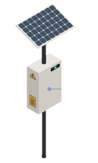
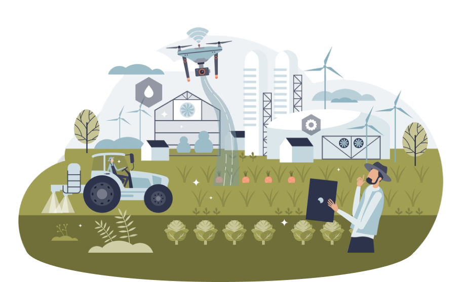

WHAT IS
WHAT IS
AGRICULTURE
TECHNOLOGY
adalah penerapan inovasi teknis dan ilmiah untuk meningkatkan efisiensi dan produktivitas dalam sektor pertanian. Teknologi ini mencakup penggunaan alat, mesin, dan sistem yang dirancang untuk membantu proses budidaya tanaman, peternakan, hingga pengelolaan sumber daya alam yang mendukung produksi pangan.
KENAPA
TEKNOLOGI?
Dengan pengembangan teknologi pertanian, manusia berupaya menciptakan sistem produksi pangan yang lebih efisien, berkelanjutan, dan mampu memenuhi kebutuhan global secara optimal.
Drone
Farmbot
CONTOH TEKNOLOGI PERTANIAN
TRACTOR
DRONE
FARMBOT
WEATHER SENSOR
TRACTOR
'Traktor'
Kegunaan Traktor
Traktor dalam teknologi pertanian digunakan untuk berbagai tugas penting seperti membajak, menanam, dan memanen dengan efisiensi yang tinggi.Traktor juga dapat menarik peralatan pertanian lainnya, seperti alat penyemprot pupuk, pemanen, dan mesin pengolah tanah.
DRONE
'Drone'
Kegunaan Drone
Drone dalam teknologi pertanian memiliki berbagai kegunaan yang signifikan,mulai dari pemetaan lahan secara detail, pemantauan kesehatan tanaman dengan sensor multispektral, hingga membantu irigasi presisi untuk efisiensi air.
Drone juga digunakan untuk penyemprotan pupuk dan pestisida secara tepat, penanaman benih, serta memprediksi hasil panen dengan lebih akurat.
FARMBOT
'Bot Pertanian'
Kegunaan FarmBot
FarmBot adalah robot otomatis yang dirancang untuk mengelola proses pertanian, khususnya untuk skala kecil dan pertanian urban. FarmBot dapat menanam, menyiram, dan memonitor tanaman secara presisi berdasarkan data yang diperoleh dari sensor.
WEATHER SENSOR
'Sensor Cuaca'
Kegunaan Weather Sensor
Weather sensor dalam teknologi pertanian berfungsi untuk memantau kondisi cuaca secara real-time, seperti suhu, kelembaban, curah hujan, dan kecepatan angin. Data ini membantu petani membuat keputusan tepat terkait irigasi, waktu tanam, dan perlindungan tanaman dari cuaca ekstrem.
BENEFIT DARI PENGGUNAAN
TEKNOLOGI AGRICULTURE

-
Peningkatan Produktivitas: meningkatkan hasil panen dengan mengoptimalkan penggunaan sumber daya
-
Efisiensi Sumber Daya: Teknologi seperti irigasi presisi dan sensor cuaca memungkinkan pengurangan pemborosan
-
Pengurangan Biaya Operasional: Dengan otomatisasi dan robotik, pekerjaan manual berkurang sehingga mengurangi biaya tenaga kerja
-
Adaptasi Terhadap Perubahan Iklim: Teknologi pertanian membantu petani memantau dan beradaptasi dengan perubahan iklim